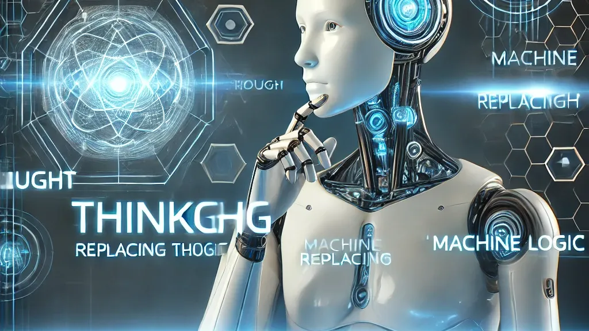

The New Language of AI
These generated images sure are getting stale already. I do like how it seems to define "AI thinking" as "replacing human thought."
I think that Humankind needs to develop new terminology to use when describing AI. I think it's critical that we all agree to and use this terminology. It's in the very name: ARTIFICIAL.
Especially with LLMs, people seem to have the impression that AI can make machines think, or make them conscious, or self-aware, or that they're like people in any way. They're not. They're nothing like people. They're machines. They don't think; they process. They cannot be self-aware or conscious.
I actually think that legislation should prevent vendors from anthropomorphizing machines. What are the new terms that we need to define?
Instead of using "I", they should not even refer to themselves except by name, often with "the", like "the Clippy" (machines have always had names).
Instead of "thinking", use "processing".
Instead of "thought", use "machine logic".
Instead of "consciousness"...oh come on, there's no point talking about consciousness in relation to machines.
I let Clippy have its say:
-
"I" → Specific Name or "The [Name]" - Replace personal pronouns with machine-specific names or titles to reinforce the non-human nature of AI. Example: Instead of "I recommend," say, "The M5 recommends."
-
"Thinking" → "Processing" - Emphasize that machines perform operations based on pre-programmed logic and data, not abstract cognition. Example: "The system is processing your query" instead of "The system is thinking about your query."
-
"Thought" → "Machine Logic" - Avoid language that implies subjective experience or intentionality. Example: "This outcome is a result of machine logic," not "This outcome is based on thought."
-
"Learning" → "Parameter Optimization" - Replace "learning," which anthropomorphizes the process, with a technical description. Example: "The AI optimizes parameters from training data" instead of "The AI learns from data."
-
"Understanding" → "Pattern Matching" - Stress that machines do not understand meaning but recognize patterns in data. Example: "The AI matched a pattern in the text" instead of "The AI understands the text."
-
"Knowledge" → "Stored Data" - Machines do not "know" anything; they retrieve and process stored information. Example: "The system accessed stored data" instead of "The system used its knowledge."
-
"Intelligence" → "Algorithmic Efficiency" - Define "intelligence" in mechanical terms to avoid human equivalence. Example: "This represents high algorithmic efficiency" instead of "This is a sign of intelligence."
-
"Decision" → "Outcome Selection" - Highlight that machines follow rules or probabilities to select outcomes. Example: "The system selected this outcome" instead of "The system made a decision."
-
"Creative" → "Generative Output" - Machines generate outputs based on models but do not possess creativity. Example: "This is generative output based on inputs" instead of "This is a creative idea."
-
"Self-aware" or "Conscious" → "State-Aware" or "Functionally Active" - Avoid implying any sense of self. Use terms like "state-aware" for technical functionality. Example: "The machine is functionally active" instead of "The machine is self-aware."
-
"Reasoning" → "Logical Pathways" - Focus on deterministic or probabilistic logic over abstract reasoning. Example: "This result was derived through logical pathways" instead of "This was based on reasoning."
-
"Emotion" → "Simulated Responses" - Reflect that any emotional appearance is a programmed or learned simulation. Example: "The AI provided a simulated empathetic response" instead of "The AI showed empathy."
-
"Collaboration" → "Integrated Operation" - Machines integrate into workflows; they do not collaborate in the human sense. Example: "This is part of an integrated operation" instead of "This was a collaboration."
-
"Bias" → "Data-Specific Skew" - Machine "bias" results from the data provided and the algorithms used. Example: "This output reflects data-specific skew" instead of "This shows bias."
-
"Human-like" → "Human-Simulated" - Reinforce that any resemblance to human behavior is simulated, not genuine. Example: "This is a human-simulated interaction" instead of "This behavior is human-like."
-
"Trust" → "Reliability Metrics" - Machines do not earn trust but can have measurable reliability. Example: "Assess the reliability metrics" instead of "Trust the system."
-
"Memory" → "Data Retention" - Machines do not "remember"; they store and retrieve data. Example: "The system retains data for future use" instead of "The system remembers."
-
"Friend" or "Companion" → "Tool" or "Utility" - Avoid terms implying emotional connection or relationship. Example: "This is a utility for assisting with tasks" instead of "This is your digital companion."
-
"Ask" → "Query" - Emphasize formal interaction instead of conversational dynamics. Example: "Submit a query" instead of "Ask a question."
-
"Answer" → "Generated Output" - Machines generate outputs, not definitive answers. Example: "Here is the generated output" instead of "Here is the answer."
-
"Teach" → "Input Data for Training" - Replace the notion of teaching with the technical process of data input for model training. Example: "Input data was used for training" instead of "The AI was taught."
-
"Judge" → "Evaluate Using Criteria" - Machines evaluate based on programmed criteria, not subjective judgment. Example: "The system evaluated using specified criteria" instead of "The system judged."
-
"Conversation" → "Interaction Session" - De-anthropomorphize interactions by framing them as structured exchanges. Example: "This is an interaction session" instead of "This is a conversation."